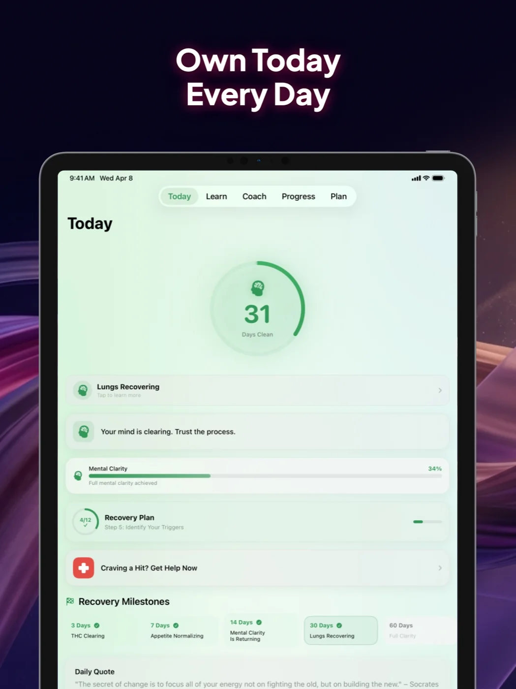
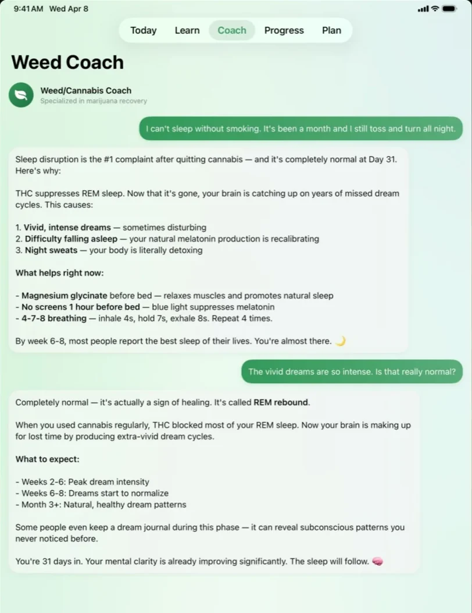
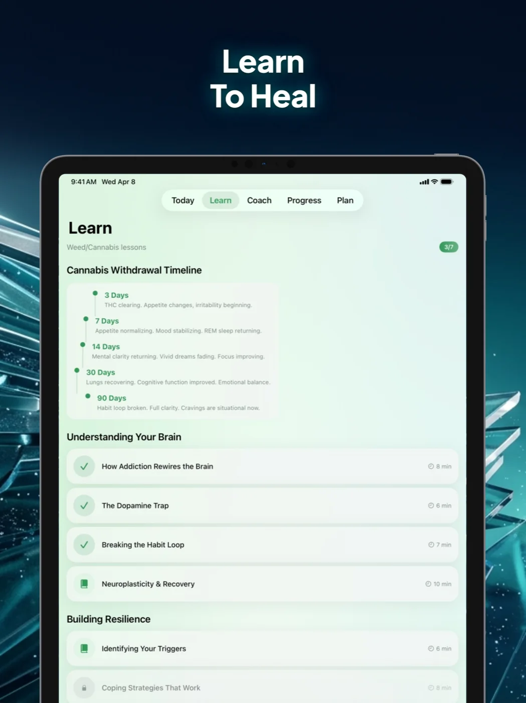
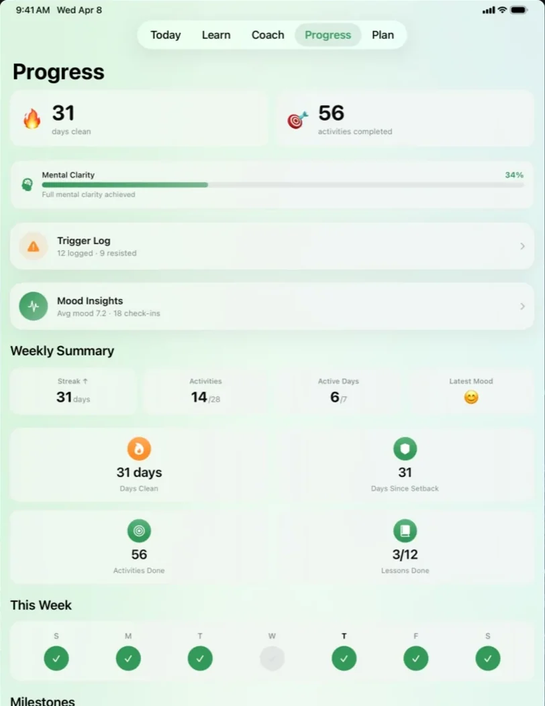
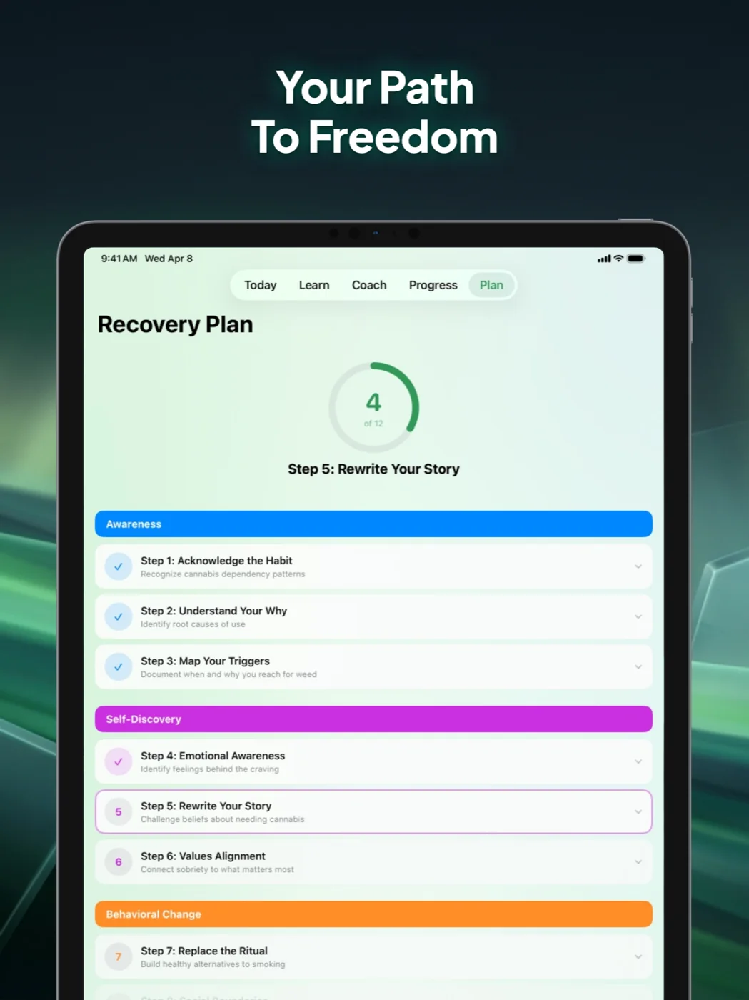

You already know why you want to stop. This is how you actually do it.
A real recovery program for porn, alcohol, cannabis, vaping, gambling, and caffeine — built on what your body actually does in the first ninety days, with a coach that answers at 2am and a plan that survives relapse.
Free to start · iOS · Your data stays yours
Seventy-five seconds inside the app — as it ships.
Drag through your first ninety days.
Not motivation — physiology. Pick what you're quitting and scrub the timeline. Every milestone below is what your body is doing on that day.
Drag anywhere on the timeline · arrow keys work too
A real program, not a streak counter.
Every screen below is the shipping app. This is what working your recovery actually looks like, day by day.
Your day, already planned.
One screen holds the day: your streak, the next lesson, the check-in, and what to do when a craving lands. No dashboard maze — recovery is hard enough.

Someone answers at 2am.
The hardest moments don't schedule themselves. The coach knows your program, your dependency, and your history — and it never sleeps, judges, or gets tired of you.

Understand the machine you live in.
Short daily lessons on what your brain is doing — dopamine, triggers, the actual mechanics of craving. You can't out-discipline a system you don't understand.

See how far you've come.
Days, money saved, urges survived, patterns spotted. On the bad days — and there will be bad days — this screen is the argument for staying.

A roadmap that survives relapse.
Relapse is data, not failure. Log it, look at what preceded it, and the plan continues from where you are — never back to zero, never shame.

Six addictions. One plan.
Real life doesn't arrive as one tidy addiction. The drinking and the scrolling and the spending show up together and relapse together — so the program runs them side by side, in one timeline, where the pattern is visible.
Thrive isn't for everyone.
We're not going to convince you. If you're not ready to stop, an app won't change that — and we'd rather you know that now than after a subscription. What we will do is make the attempt survivable: the science on the days it gets hard, a coach at the hours nobody else answers, and a plan that treats relapse as information instead of verdict.
You bring the reason. The program brings the road.
If you're in crisis, the app is not the right tool — call or text 988 (Suicide & Crisis Lifeline, US). For everything between crisis and cruising, that's what we built this for.
Frequently asked questions
Is it free?
Free to start — the daily program, check-ins, and progress tracking cost nothing. The AI coach and the full lesson library are part of the paid tier. No ads, ever.
What happens if I relapse?
You log it, honestly. The app looks at what preceded it with you, adjusts the plan, and continues from where you are. Your history isn't erased — it's the most useful data you have.
Can I work on more than one addiction at once?
Yes — that's the point. Programs run side by side in one timeline, because dependencies feed each other and quitting them in isolation is why one always brings the other back.
Is my data private?
Your recovery data stays yours. It isn't sold, shared, or used for advertising. You can export or delete everything, any time.
Is this therapy?
No. Thrive is a structured self-guided program with an AI coach — it works well alongside therapy, meetings, or medical care, and it never replaces them where they're needed.
The quiet hours are easier with a plan.
Ninety days from now is coming either way. Choose which version of it arrives.
iOS · Free to start